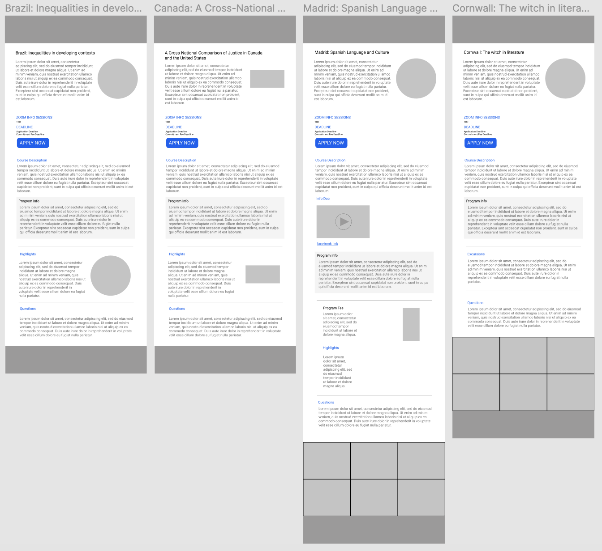

Faculty-Led Pages
The two most notable obvious differences between all of the pages is the grid at the bottom of the page and how some pages have square featured images while others have circles. The easiest solution in this case is just to add the grids to the bottom of all the pages and either have all of the pictures be circles or all of the pictures be squares. In this case all of the major shapes in each page would be the same which would help to make each page more uniform. Most pages already have this format but for reference the “Italy: Rome of the Caesars, Rome Of the Popes” is a good page to reference for a general theme.
Summer I Pages

Summer II/III Pages
